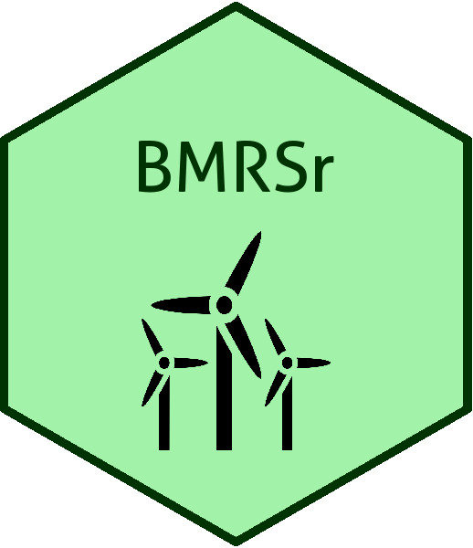

I'm a psychology graduate from Cardiff University with an Interest in R. I've developed an R package called BMRSr, that can help users download energy-related data from the Balancing Mechanism Reporting Service API. For more about this, click on one of the "BMRSr" links.
I'm also developing a set of R training materials called teacheR. This is aimed at beginners to the R language, but also to people who may be interested in learning to teach R to others. I'll cover all of the basic concepts in R, and there's an online presentation for each chapter for those who are visual learners or for prospective tutors who don't have the time to develop their own materials. Any feedback is greatly appreciated; just open up an issue on Github if you spot anything that you think is missing or should be changed.